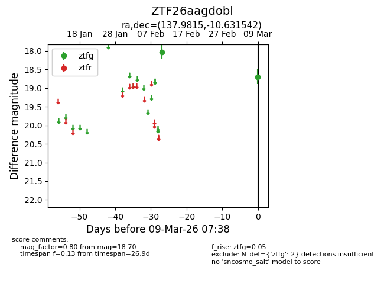
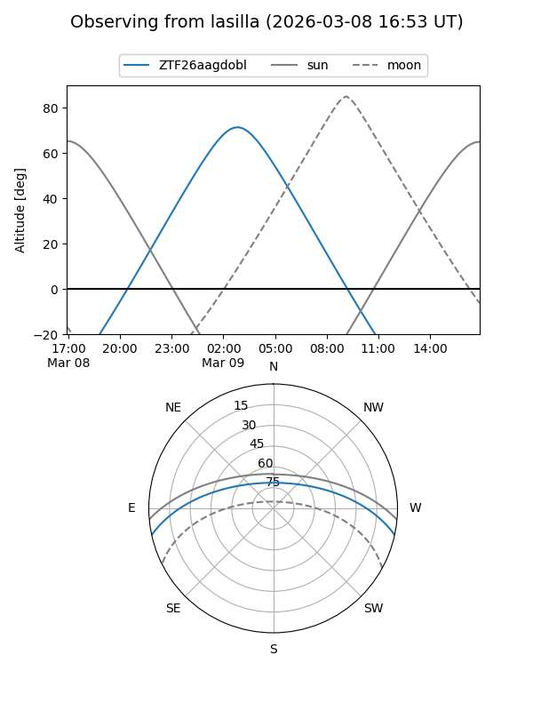
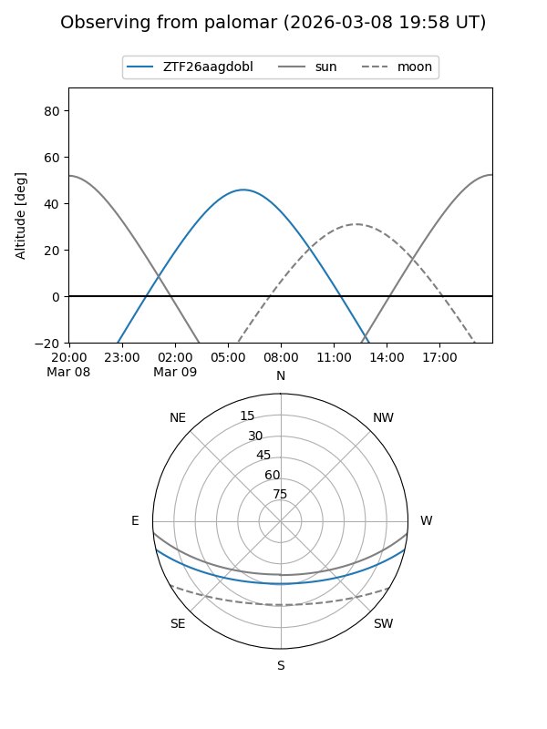

ZTF26aagdobl
Target ZTF26aagdobl at 2026-03-09 07:39
Aliases and brokers:
FINK: link
Lasair: link
ALeRCE: link
alt names
ZTF26aagdobl (ztf,fink_ztf)
Coordinates:
equatorial (ra, dec) = 137.9815,-10.63154
equatorial (HMS+DMS) = 09:11:55.56,-10:37:53.55
galactic (l, b) = (240.6307,+24.77858)
Flags:
Photometry:
last ztfg=18.70
2 ztfg detections
Lightcurve

Visibility


Additional plots